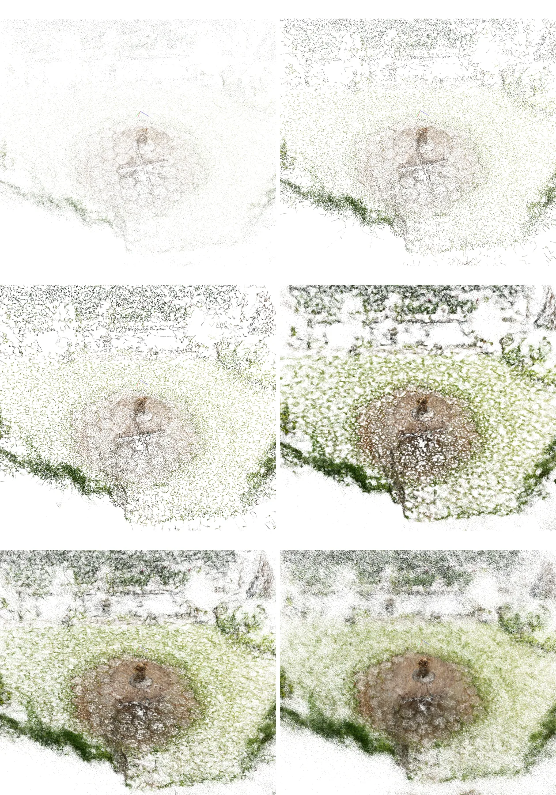
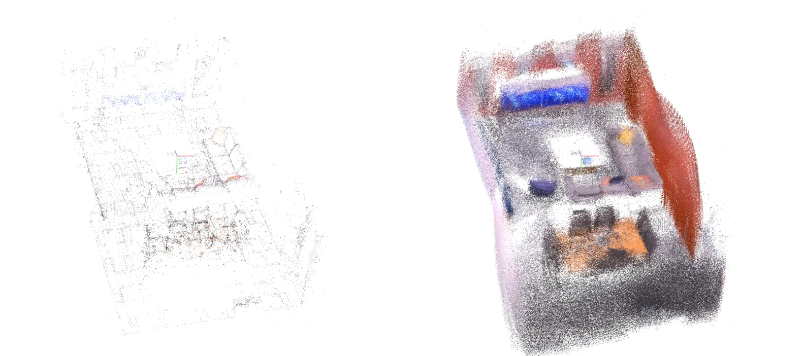

通过点云上采样优化 3D Gaussian SplattingOptimizing 3D Gaussian Splatting via Point Cloud Upsampling
方法朴素但工程价值明确，适合优化 COLMAP 到 3DGS 的初始化链路。
一句话工作总结
从 seed point 质量入手提升 3DGS 初始化和重建效果。
摘要
论文系统评估多种 3DGS 初始点云上采样策略，包括线性/三角插值、样条曲面重建、MLS 和 Voronoi 点生成，并提出 depth-guided point lifting 来保持与 SfM 重建的几何一致性。
3D Gaussian Splatting (3DGS) is a technique for creating and rendering 3D scenes, however its performance depends heavily on the quality of initial seed points. To improve 3DGS initialization, this study presents and evaluates several point cloud upsampling approaches: linear interpolation, triangular interpolation, spline-based surface reconstruction, moving least squares surface fitting, and Voronoi-based point generation. Additionally, this research introduces a depth-guided point lifting method that leverages depth maps to maintain geometric consistency with Structure-from-Motion (SfM) reconstructions. Through extensive experiments on the Mip-NeRF360 and Replica datasets, the proposed methods demonstrate improvements in reconstruction quality across diverse scene types. Results indicate that different upsampling strategies excel in different scenarios: surface reconstruction methods perform better with organic, detailed scenes, while simpler interpolation approaches are more suited for scenes dominated by piecewise-smooth geometries. In comparison, the depth-guided approach shows promise for adding geometry-aware points across the entire scene, importantly in texture-less regions. These findings, which provide preliminary practical guidelines for selecting appropriate upsampling methods based on scene characteristics and computational constraints, advances the understanding of how point cloud initialization affects 3DGS quality.
中文解读摘录
- ZipSplat：arXiv
- Geometry Gaussians：arXiv
- Optimizing 3DGS via Point Cloud Upsampling：arXiv
- 领域标签：3DGS / 几何表示 / 初始化 / 高效表示
- 观察：
ZipSplat通过 token 聚类减少 Gaussian 数量；Geometry Gaussians解耦外观 opacity 和 geometry opacity；点云上采样工作则直接针对 3DGS seed point 质量做优化。 - 为什么值得关注：这些工作都在补 3DGS 从渲染表示走向几何地图时的短板：表示预算、几何一致性和初始化质量。对 3DGS-SLAM 后端很有参考价值。
图表/页面预览
{kind=link}

{kind=link}
